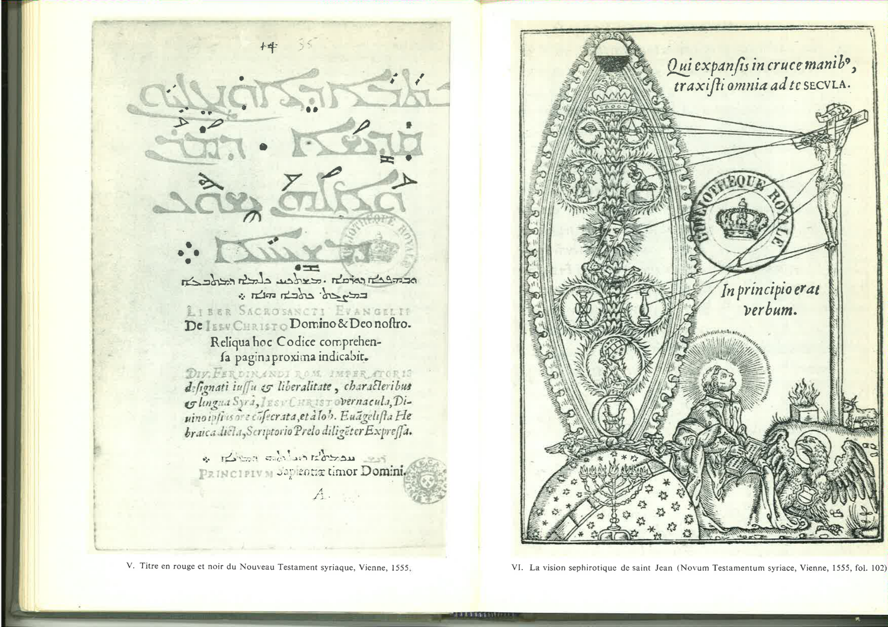

Chunk 23
Pages 71-75
The Scechinah opens with a striking scriptural reference: the gate of the Temple described in Ezekiel chapter forty-six, verse two—the gate that "shall be shut the six working days, but on the Sabbath it shall be opened." Gilles positions this closed-then-opened gate as symbolic of Kabbalah's relationship to revealed Scripture: the esoteric dimension of the text lies closed to the ordinary reader, accessible only through mystical initiation and the cultivation of spiritual insight. For Gilles, Kabbalah is not foreign or heterodox knowledge but rather the "domestic" key to the innermost sanctum of Scripture itself. He castigates contemporary exegetes who prize eloquence and classical rhetorical display over the sacred letters themselves, preferring pagan authorities (Pliny, Dioscorides, Theophrastus, Aristotle) to the divine mysteries embedded in Hebrew. Against this superficial scholarship, Gilles posits the "dialectic of Kabbalah"—a method of scriptural analysis that reveals the seventy-two aspects and infinite facets of Torah's meaning. This dialectic, he claims, far supersedes Aristotelian logic because it operates not through formal syllogism but through mystical correspondence and symbolic proliferation. Where Aristotle's logic demands univocal definition, Kabbalah permits (indeed, requires) the multiplication of meaning through letter, number, and symbol.
A crucial theological passage establishes the legitimacy of scriptural abbreviation and textual compression. Gilles argues that if the divine word were written out in its fullness—if God had set down every particular truth and distinction without abbreviation—the resulting text would require vast volumes, each containing secrets beyond human comprehension. Instead, the Divine Scribe (God himself authoring Scripture) compressed revelation "after the manner of ancient notation," a method Gilles compares to how scholars might abbreviate Marcus Tullius Cicero as MTC. The Matthean dictum—"not one iota shall pass" (Matthew 5:17)—and John's promise of continued revelation through the Spirit justify an exegetical infinity: every letter, every particle, conceals layers of meaning. The Shekinah, understood as divine indwelling presence, transmits continuous intelligence across the centuries—not merely through the Gospels but through the entire scriptural corpus properly interpreted. This argument, subtle and theologically consequential, permits Gilles to claim that Kabbalah is not supplement to revelation but rather the hermeneutical method through which revelation's compressed fullness is progressively unfolded. Each generation of interpreters, guided by the Spirit and enlightened through kabbalistic method, gains access to new dimensions of the perpetually generative text.
The Scechinah, personified as the tenth Sephirah (Malkhuth, the Kingdom of manifestation), undertakes a cosmic ascent for Charles V through the angelic palaces of Uriel, Raphael, Gabriel, and Michael—the archangels who guard the Sephirotic spheres and reveal the divine names arranged in three ternaries (triads) plus the Shekinah herself constituting the tenth. This visionary itinerary draws simultaneously on Hebrew mysticism (the ma'alot, the ascent through celestial palaces; the naming of archangels) and classical mythology. The invocation of eagle-wings (drawn from Exodus's theophany: "I carried you on eagle's wings"), the mystical reading of Parnassus (mount of the Muses) as Gan Heden (the Garden of Eden), and the theophanic descent of divine knowledge from heavenly heights to earthly consciousness exemplify the characteristic Renaissance fusion of biblical, Neoplatonic, and classical reference. Gilles treats these diverse traditions not as conflicting but as converging testimony to the same esoteric truths. The pagan poets glimpsed the Garden; the biblical prophets entered its gates; the Christian mystic, properly instructed, ascends through the same path that leads to union with divine Wisdom.
The Scechinah emphasizes correspondence between the macrocosm and microcosm: God inscribed signs in matter itself, as the ancient Egyptians intuited when they created hieroglyphics. This correspondence guarantees symbolic continuity between celestial and terrestrial realms—what occurs in the realm of the Sephiroth patterns itself in natural generation, in the human body, and in historical events. The Shekinah embodies the crucial mediatorial function in this cosmology. She is simultaneously the Bride (ecclesia, the Church), Zion (the spiritual Jerusalem), Mother (divine nurturing), Dove (innocence and purity), Eagle (mighty ascent), and the luminous Parnassa (nourishing the human intellect with wisdom). She does not dwell in abstract theological formulation but concretely in the lives of human beings, making mystical knowledge accessible and redemptively efficacious. Through her mediation, the highest mysteries become incarnate in time and history, transforming human consciousness and preparing the soul for deification.
The manuscript includes striking visual testimony to how Christian Kabbaliste visualized mystical theology. Portrait IV presents Pietro Galatino (extracted from Gerhard David's De Angelis, Venice 1713), depicting the humanist scholar whose physiognomy and bearing embody the learned dignity of Christian Kabbalah. The allegorical title-page from the Novum Testamentum Syriacum (Vienna 1555) offers an elaborate engraved representation of the sephirotic vision of Saint John—the apostle ascending through the celestial palaces, receiving mystical illumination through each Sephirah, culminating in vision of the Godhead. These engravings function as visual equivalents to Gilles's textual mysticism: they demonstrate how the abstract architecture of the Sephiroth, properly understood, mapped onto biblical narrative and Christian spiritual experience. The visual representation made the esoteric system tangible, memorable, and transmissible—a crucial function in an era before mass printing had democratized access to manuscript knowledge.
The Scechinah's comprehensive synthesis represents perhaps the high-water mark of Renaissance Christian Kabbalah's intellectual confidence. Gilles claims not merely to reconcile Hebrew and Christian traditions but to unveil a unified theology where Sephirotic symbolism reveals Christ's incarnation, the Church's nature, and the trajectory of history itself. Every symbol interlocks; every number resounds with theological significance; the deepest principles of cosmology align with the intimate mysteries of faith. That such a synthesis would prove intellectually unstable, that its reliance on correspondence and symbolic proliferation would eventually exhaust itself, and that the Protestant Reformation and Catholic Counter-Reformation would largely marginalize such mystical theology—these outcomes lay in the future. In Gilles's lifetime, the Scechinah represented the culmination of Renaissance mystical aspiration: the proof that human reason, properly directed toward the sacred text and illuminated by kabbalistic method, could grasp the inner coherence of all knowledge and attain something approaching theurgic transformation.

Page de titre gravée, emblématique baroque